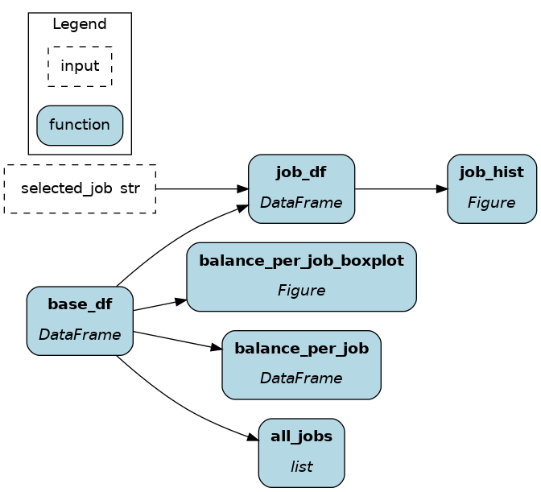

Streamlit¶
Streamlit is an open-source Python library to create web applications with minimal effort. It’s an effective solution to create simple dashboards, interactive data visualizations, and proof-of-concepts for data science, machine learning, and LLM applications. On this page, you’ll learn how Apache Hamilton can help you:
Write cleaner Streamlit applications
Reduce friction transition between proof-of-concept and production
Improve Streamlit performance
Challenges¶
1. Hard to read UI and data flows.¶
Complex Streamlit applications become difficult to debug because of the complex flow of operations. In the simplest case, all the code is under the main function call app() and components are added to the UI from top to bottom. Components can be nested under columns, containers, expanders, tabs, and more to organize them on the page by using the with Python syntax. A good coding practice is to separate data transformations from UI, but Streamlit can blur these lines. Things are further complicated when components are added or updated outside the main scope app(). As user interactions, data transformations, state, and UI layout become difficult to trace, risks of breaking changes increase and debugging is more challenging.
import streamlit as st
# external function writing component
def greeting(name: str) -> None:
st.write(f"Hello {name}")
def app():
st.title("Apache Hamilton + Streamlit 🐱🚀")
main, settings = st.tabs(["Main", "Settings"])
left, right = st.columns(2)
# nesting tabs and columns
with main:
with left:
name = st.text_input(
"What's your name", value="Lambda"
)
with right:
greeting(name)
if __name__ == "__main__":
app()
⚠ This example is illustratory and real applications quickly get more complex.
2. Cache and state management¶
When the user interacts with the app, Streamlit reruns your entire Python code to update what’s displayed on screen (reference). By default, no data is preserved between updates and all computations need to be executed again. Your application suffer slow downs if you handle large dataframes or load machine learning models in memory for instance. To overcome this limitation, Streamlit allows to cache expensive operations via the decorators @streamlit.cache_data and @streamlit.cache_resource and store state variables between reruns in the global dictionary streamlit.session_state or via key attributes of input widget. State management becomes particularly important when building a multipage app where each page is defined in a separate Python file and can’t commmunicate by default.
import pandas as pd
import streamlit as st
@st.cache_data
def load_dataframe(path: str) -> pd.DataFrame:
return pd.read_parquet(path)
def app():
st.title("Apache Hamilton + Streamlit 🐱🚀")
# load_dataframe() will only run the first time
df = load_dataframe(path="...")
st.dataframes(df)
# If favorite flavor is known, display it.
if st.session_state("favorite"):
st.write(f"Your favorite ice cream is: {st.session_state['favorite']}")
# Ask for the favorite ice cream until an answer is given.
else:
st.text_inputs(
"What's your favorite ice cream flavor?",
key="favorite", # key to st.session_state
)
if __name__ == "__main__":
app()
⚠ This example is illustratory and real applications quickly get more complex.
Apache Hamilton + Streamlit¶
Adding Apache Hamilton to your Streamlit application can provide a better separation between the dataflow and the UI logic. They pair nicely together because Apache Hamilton is also stateless. Once defined, each call to Driver.execute() is independent. Therefore, on each Streamlit rerun, you use Driver.execute() to complete computations. Using Apache Hamilton this way allows you to write your dataflow into Python modules and outside of the Streamlit.
Example¶
In this example, we will build a simple financial dashboard based on the Kaggle Bank Marketing Dataset.
The full code can be found on GitHub
First, Apache Hamilton transformations are defined in the module logic.py. This includes downloading the data from the web, getting unique values for job, conducting groupby aggregates, and creating plotly figures.
# logic.py
import pandas as pd
import plotly.express as px
from plotly.graph_objs import Figure
def base_df() -> pd.DataFrame:
path = "https://raw.githubusercontent.com/Lexie88rus/bank-marketing-analysis/master/bank.csv"
return pd.read_csv(path)
def all_jobs(base_df: pd.DataFrame) -> list[str]:
return base_df["job"].unique().tolist()
def balance_per_job(base_df: pd.DataFrame) -> pd.DataFrame:
return base_df.groupby("job")["balance"].describe().astype(int)
def balance_per_job_boxplot(base_df: pd.DataFrame) -> Figure:
return px.box(base_df, x="job", y="balance")
def job_df(base_df: pd.DataFrame, selected_job: str) -> pd.DataFrame:
return base_df.loc[base_df['job']==selected_job]
def job_hist(job_df: pd.DataFrame) -> Figure:
return px.histogram(job_df["balance"])

Then, the Streamlit UI is defined in app.py. Notice a few things:
app.pydoesn’t have to depend onpandasandplotly.@cache_resourceallows to create theDriveronly once.@cache_dataon_execute()will automatically cache any Apache Hamilton result based on the combination of arguments (final_vars,inputs, andoverrides)get_state_inputs()andget_state_overrides()will collect values from user inputs.execute()parses the inputs and overrides from the state and call_execute().
# app.py
from typing import Optional
from hamilton import driver
import streamlit as st
import logic
# cache to avoid rebuilding the Driver
@st.cache_resource
def get_hamilton_driver() -> driver.Driver:
return (
driver.Builder()
.with_modules(logic)
.build()
)
# cache results for the set of inputs
@st.cache_data
def _execute(
final_vars: list[str],
inputs: Optional[dict] = None,
overrides: Optional[dict] = None,
) -> dict:
"""Generic utility to cache Apache Hamilton results"""
dr = get_hamilton_driver()
return dr.execute(final_vars, inputs=inputs, overrides=overrides)
def get_state_inputs() -> dict:
keys = ["selected_job"]
return {k: v for k, v in st.session_state.items() if k in keys}
def get_state_overrides() -> dict:
keys = []
return {k: v for k, v in st.session_state.items() if k in keys}
def execute(final_vars: list[str]):
return _execute(final_vars, get_state_inputs(), get_state_overrides())
def app():
st.title("Apache Hamilton + Streamlit 🐱🚀")
# run the base data that always needs to be displayed
data = execute(["all_jobs", "balance_per_job", "balance_per_job_boxplot"])
# display the base dataframe and plotly chart
st.dataframe(data["balance_per_job"])
st.plotly_chart(data["balance_per_job_boxplot"])
# get the selection options from `data`
# store the selection in the state `selected_job`
st.selectbox("Select a job", options=data["all_jobs"], key="selected_job")
# get the value from the dict
st.plotly_chart(execute(["job_hist"])["job_hist"])
if __name__ == "__main__":
app()
Benefits¶
Clearer scope: the decoupling between
app.pyandlogic.pymakes it easier to add data transformations or extend UI, and debug errors associated with either.Reusable code: the module
logic.pycan be reused elsewhere with Apache Hamilton.If you are building a proof-of-concept with Streamlit, your Apache Hamilton module will be able to grow with your project and be useful for your production pipelines.
If you are already building dataflows with Apache Hamilton, using it with Streamlit ensures your dashboard metrics have the same implementation with your production pipeline (i.e., prevent implementation skew)
Performance boost: by caching the Hamilton Driver and its execution call, we are able to effectively cache all data operations in a few lines of code. Furthermore, Apache Hamilton can scale further by using a remote task executor on a separate machine from the Streamlit application.